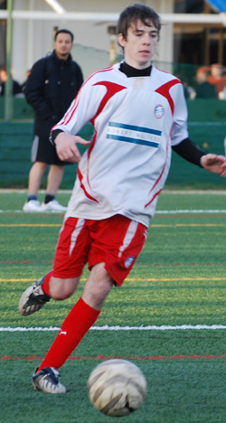

|
ASIJ, Saturday 11th April
Little Danny boy is going back to Brighton on April 20th. Happy 420. But we know he will feel homesick away from his BFC family and he will be back soon. His last game for BFC was rightfully played on a teensy-weensy pitch that allowed shooting from virtually anywhere ensuring a ten goal thrilla akin to his beloved ‘Winning Eleven’ (That’s ‘Pro Evolution’ for those of you who don’t live in Japan). The three new cheerleaders that BFC recently recruited, whose combined age came to about 57 (seriously), seemed to enjoy every minute of it. Danny almost scored the goal of the game, but his 20-yard belter rattled off the underside of the bar with great fury and some suspect it could have crossed the line but the officials were nowhere close to judge.
Morson and Geckoes Captain Brommy were both hesitant to play a TML game on a training pitch - the only other option other than playing 5-a-side in the gym, as the gorgeous full-sized astro had been double-booked.
Cheers to Brommy though and all the other amphibians for agreeing to play - this showed great sportsmanship when lesser teams would have quibbled and whinged - in consummate Geckoes style they just got on with it.
And they were feeling pretty happy about that decision ten minutes in with a couple of quick goals to put an uninterested BFC, seemingly incapable of passing a single ball 15-yards to feet, on the backfoot.
Two shots from outside the area flew into the goal before Danny- boy had even fastened his hair band - two goals that Carlos missed having caught an elbow straight in the hooter (unintentional) and being all but sparkers on the touchline for 20-minutes, covered in claret. He recovered enough later on for a foray into seedy Kabukicho-cho 'tho... Neon temptations.
BFC finally roused themselves from hangovers, marital-disharmony and spring break-ups and started to take some interest. One long clearance from Saco ended up on Evs chest on the edge of the box and he calmly took it down and tucked into the far left corner. Sexy. Pliable.
Their lino was hallucinating claiming offside, as apparently he saw a ‘flick’. Mate, it can’t be offside if you flick it yourself - that said, the linesmen for both teams were for the best part stellar throughout the game which is how it should (always) be. Fair.
You would think this would settle down BFC but no; we immediately gifted the newts another goal. 3-1 now and things are looking pretty bleak. New boy Hamish though came in and hit the byline from a good move down the right wing involving Carlos and an intelligent ball from Jon. His pullback found Taka marauding into the box and Taka showed great composure and finished bravely and with aplomb.
Things never change though for within minutes, we were 4-2 down thanks to another mix up in defence. It’s never good to criticize your teammates in a match report but it has to be said that BFC’s backline was shambolic in the first half. Absolutely atrocious. Brommy had a very wide grin at halftime.
I don’t know what the salamanders were saying at halftime but they must have been over the moon. In the red corner though, it wasn’t pretty as harsh words were exchanged and the captain pulled out his book of clichés to try rally his troops. Carlos though didn’t want to listen to anybody and his diatribe wasn’t done when the ref blew for the beginning of the second half. Halftime was only Bananas and aquarius, no Marlboro Lights allowed in school. Gutted.
That diatribe probably worked because the second half was all one way traffic. BFC finally decided to play and play they did. Evs (yes I'm writing this myself) had his game of the season deputizing for pinging Pabs who was away hanami-ing in Niigata. In the absence of the Iron man, Evs was called upon to ping and pong up and down like that famous’pig in war’ and he showed up at every corner of the pitch to block, tackle and even shoot. Sho was giving their left back such grief that he could only scythe him time and again to stop him, while their backline were beginning to struggle with young Hamish’s power and speed. The goals came in such quick succession it’s hard to remember them. I honestly can’t remember our third though it was apparently from Saco who also bundled in the equalizer at the far post from Carlos’ beautifully whipped in freekick after Sho had been brought down again just past the halfway line (he should've passed the ball long before he was hacked down 'tho...).
Hamish’s quick thinking put BFC in front when he took a quick throw-in straight to Jon Day’s head just inside the area and the Salmon leaped to angle it past the stranded keeper and into the bottom left corner. Crafty.
The sixth had a bit of magic about it as Jon swivelled and dinked a perfectly weighted ball over and round the defence for Evs to run on to. His first touch was poor letting the ball roll on to a tight angle and seemed to have lost the chance, but he recovered well to nutmeg the covering defender and the goalie as well. Twinkle-toes.
There was still time for Evs to waste another chance or two to Jon’s chagrin, Hamish to blast just wide after twisting and turning beautifully, Sho to overhit a cross when the simple slide rule pass seemed obvious and Danny to hit the bar with that screaming shot. Peppering.
Oh, the vanilla reference in the title is just because Danny-boy doesn’t drink alcohol so post game drinks usually means we have to watch a grown man (growing perhaps?) ask for all sorts of weird things like ice cream and lemonade and melon-soda floats. We love you though Danny (you're a great lad and a phenomenal winger) and we all know you will be back in time for next season - cause England's basically rubbish. Enjoy the boys in Brighton - we hear they like their fizzy drinks with a scoop of ice cream too (just not necessarily in the drink... ; )
Report byPara Mexico
|